Amendment #164 (S.O. 7(E), 1985)
67 changes: 20 to the First Schedule, 47 to the Second Schedule. 64 applied3 not applied
What it did to the ministries
- splitMinistry of Education and Culture splits into Ministry of Education (50) and Department of Culture (42) change 5, 6, 15, 16, 36, 37 · histories: Education and Culture, Education, Cultural Affairs
- splitMinistry of Energy splits into Ministry of Petroleum (18) and Ministry of Steel, Mines and Coal (12) and Ministry of Irrigation and Power (11) change 6, 10, 39, 45, 46, 50 · histories: Energy, Petroleum and Chemicals, Steel, Mines and Coal, Irrigation and Power
- spun offDepartment of Personnel and Administrative Reforms is separated from Ministry of Home Affairs (40 subjects) change 7, 8, 17, 41, 42, 43 · histories: Home Affairs, Personnel
- absorbedMinistry of Rural Development joins Ministry of Agriculture and Rural Development (96 → 113) change 1, 12, 21, 22, 23, 24 · histories: Rural Development, Agriculture
- absorbedDepartment of Supply joins Ministry of Commerce and Supply (60 → 64) change 2, 3, 20, 26, 27, 28 · histories: Supply, Commerce and Supply
- absorbedMinistry of Irrigation joins Ministry of Irrigation and Power (11 subjects) change 8, 45, 46 · histories: Irrigation, Irrigation and Power
- absorbedMinistry of Steel and Mines joins Ministry of Steel, Mines and Coal (20 subjects) change 14, 55, 56, 57 · histories: Steel and Mines, Steel, Mines and Coal
- renamedDepartment of Environment is renamed Ministry of Environment and Forests change 15, 16, 39 · histories: Environment & Climate
- renamedMinistry of Agriculture is renamed Ministry of Agriculture and Rural Development change 1, 21, 22, 23, 24, 25 · histories: Agriculture
- renamedMinistry of Commerce is renamed Ministry of Commerce and Supply change 2, 3, 26, 27, 28 · histories: Commerce and Supply
- renamedMinistry of Labour and Rehabilitation is renamed Ministry of Labour change 9, 11, 47, 48, 49 · histories: Labour and Employment
- renamedDepartment of Parliamentary Affairs is renamed Ministry of Parliamentary Affairs change 10, 17, 50, 61 · histories: Parliamentary Affairs and Tourism
- renamedDepartment of Science and Technology is renamed Ministry of Science and Technology change 14, 18, 53, 62 · histories: Science and Technology
- renamedMinistry of Social Welfare is renamed Ministry of Social and Women's Welfare change 13, 54 · histories: Social and Women's Welfare
- renamedDepartment of Sports is renamed Department of Youth Affairs and Sports change 19, 65, 66 · histories: Youth Affairs and Sports
- grewMinistry of Environment and Forests grows from 10 to 13 subjects change 15, 16, 39 · histories: Environment & Climate
- grewMinistry of Science and Technology grows from 22 to 27 subjects change 14, 18, 53, 62 · histories: Science and Technology
- grewMinistry of Communications grows from 6 to 13 subjects change 3, 4, 29 · histories: Communications
- shrankMinistry of Labour shrinks from 59 to 40 subjects change 9, 11, 47, 48, 49 · histories: Labour and Employment
The order, page by page
Page 1 of 24
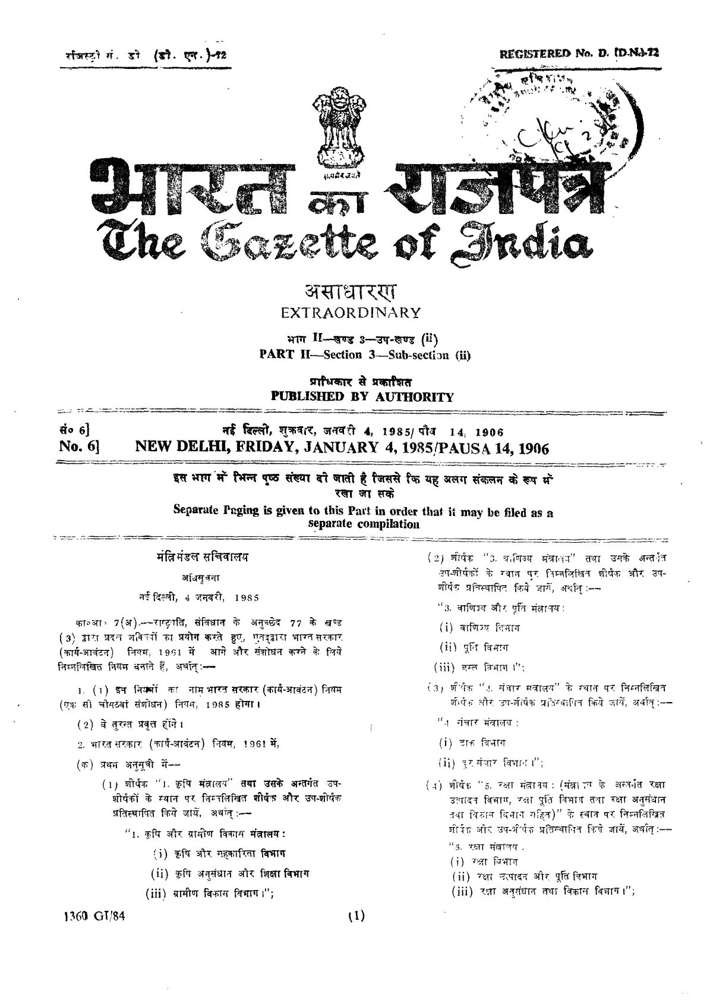
Page 2 of 24
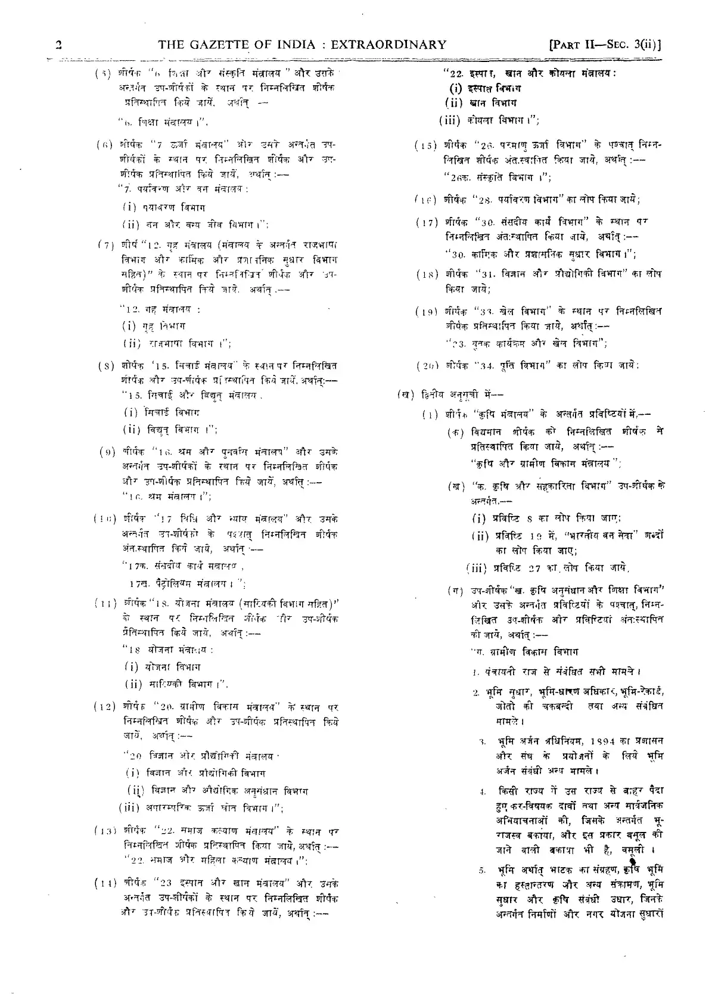
Page 3 of 24
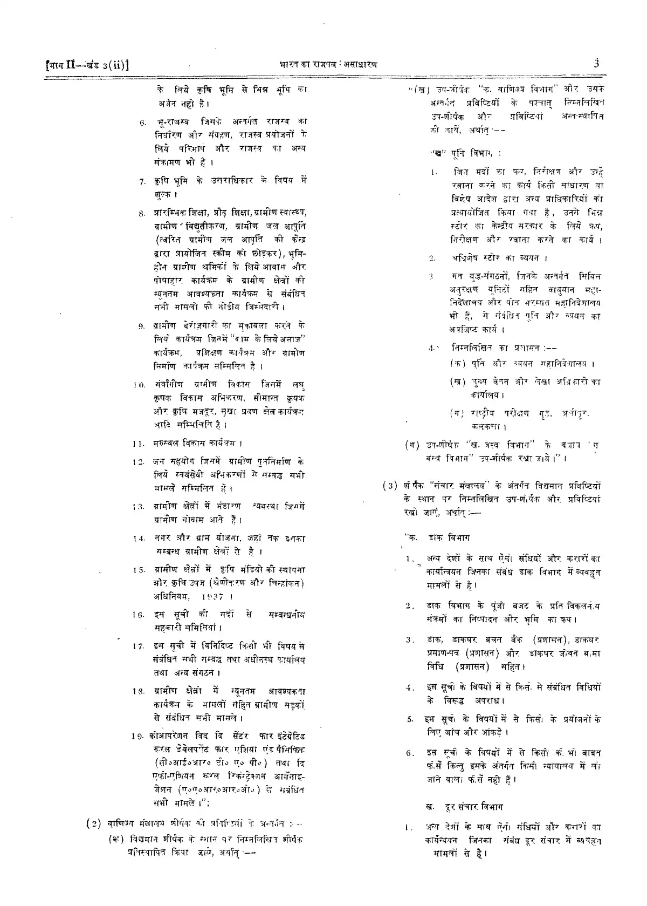
Page 4 of 24
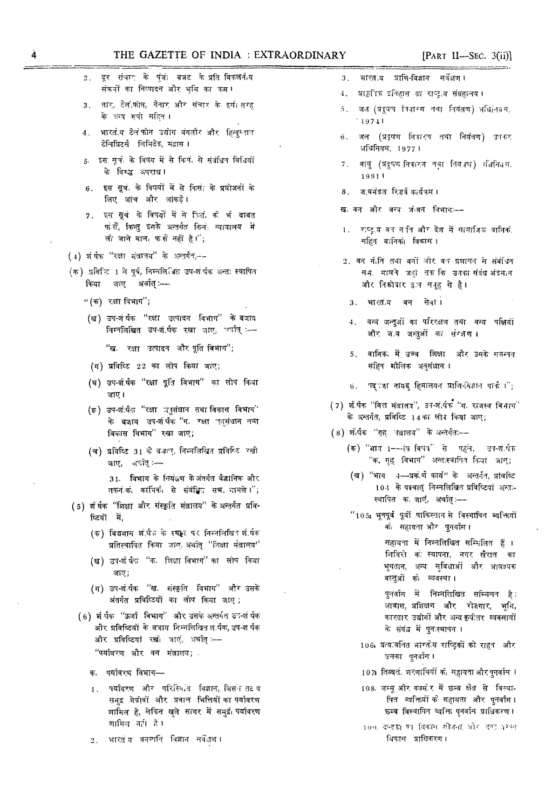
Page 5 of 24
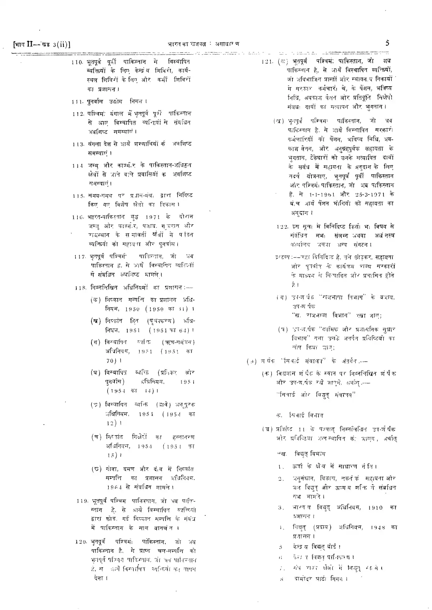
Page 6 of 24
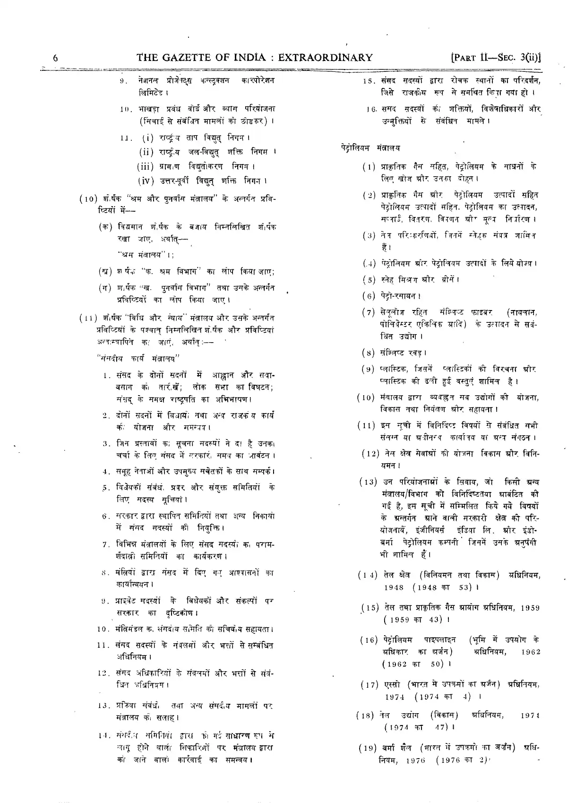
Page 7 of 24
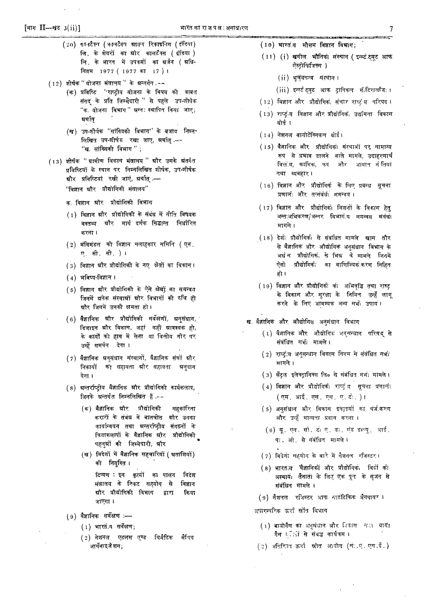
Page 8 of 24
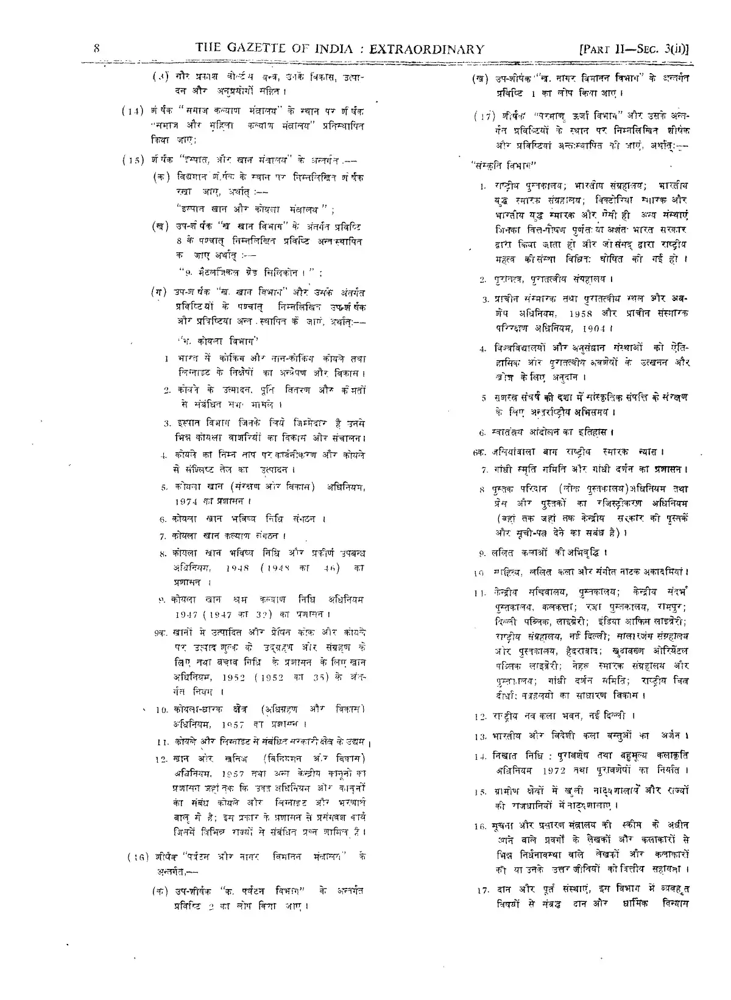
Page 9 of 24
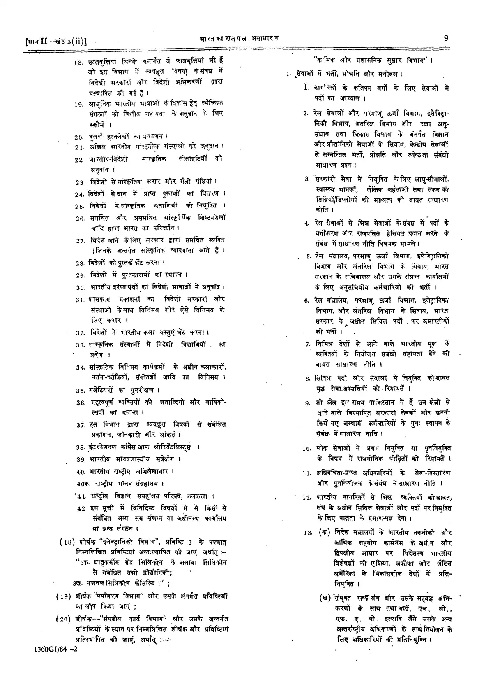
Page 10 of 24
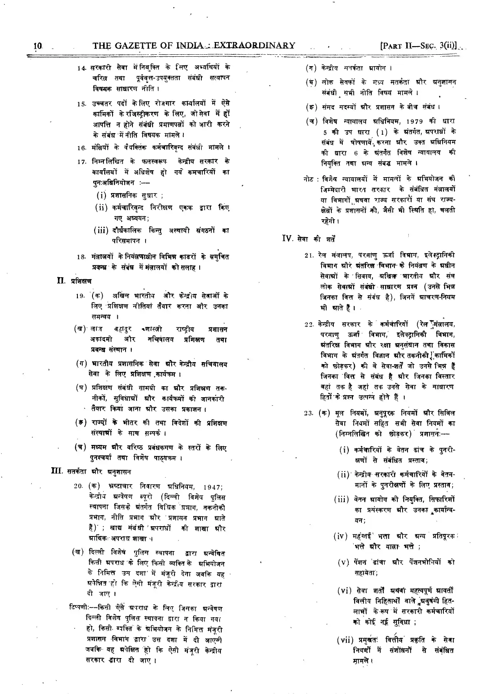
Page 11 of 24
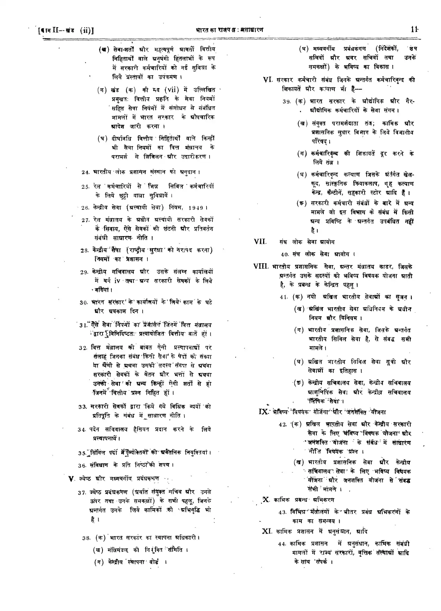
Page 12 of 24
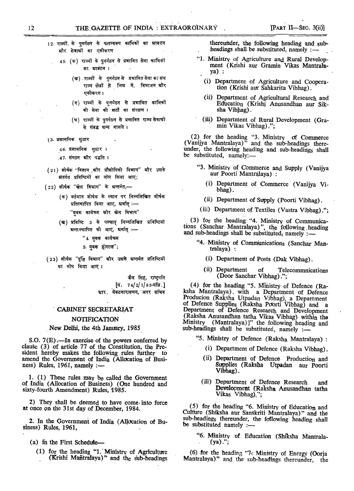
123456Schedule 1 › Ministry of Agriculture
- 1. Ministry of Agriculture and Rural Development
- i. Department of Agriculture and Cooperation
- ii. Department of Agricultural Research and Education
- iii. Department of Rural Development
applied at schedule 1 › ministry 1 in the Rules after #164
new extra
Schedule 1 › Ministry of Commerce
- 3. Ministry of Commerce and Supply
- i. Department of Commerce
- ii. Department of Supply
- iii. Department of Textiles
applied at schedule 1 › ministry 2 in the Rules after #164
Schedule 1 › Ministry of Communications
- 4. Ministry of Communications
- i. Department of Posts
- ii. Department of Telecommnications
applied at schedule 1 › ministry 3 in the Rules after #164
new extra, new missing
Schedule 1 › Ministry of Defence
- 5. Ministry of Defence
- i. Department of Defence
- ii. Department of Defence Production and Supplies
- iii. Department of Defence Research and Development
applied at schedule 1 › ministry 4 in the Rules after #164
new hindi differs
Schedule 1 › Ministry of Education and Culture
- 6. Ministry of Education
applied at schedule 1 › ministry 45 in the Rules after #164
new extra
Schedule 1 › Ministry of Energy
- 7. Ministry of Environment and Forests
- i. Department of Environment
- ii. Department of Forests and Wild Life
applied at schedule 1 › ministry 6 in the Rules after #164
new extra, new missing
Page 13 of 24
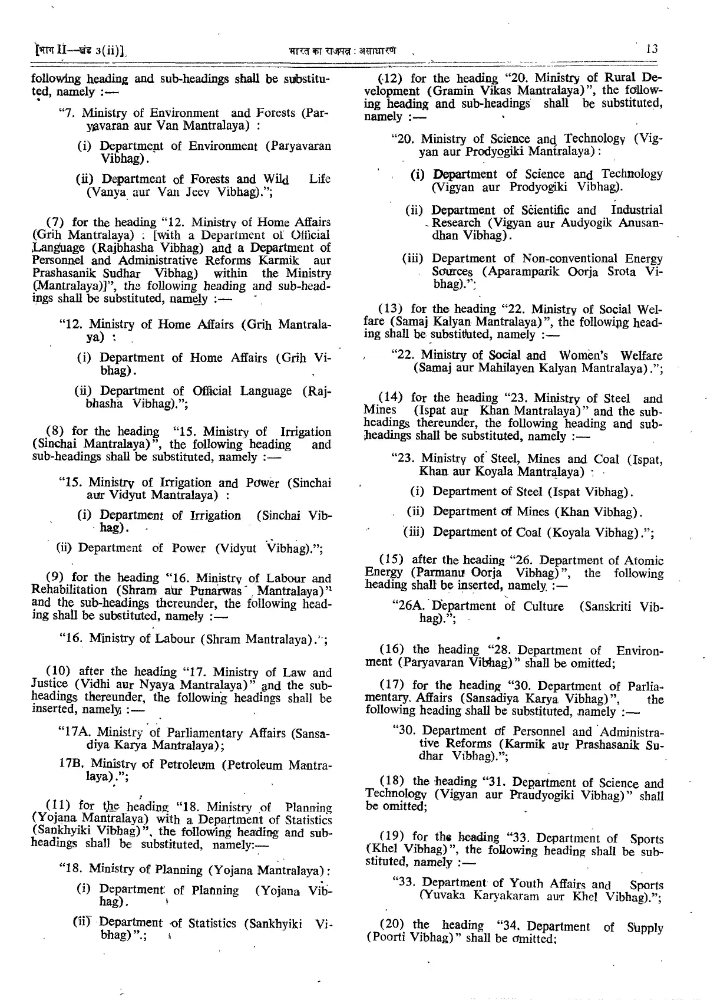
7891011121314151617181920Schedule 1 › Ministry of Home Affairs
- 12. Ministry of Home Affairs
- i. Department of Home Affairs
- ii. Department of Official Language
applied at schedule 1 › ministry 10 in the Rules after #164
new extra, new hindi differs, new missing, new text differs
Schedule 1 › Ministry of Irrigation
- 15. Ministry of Irrigation and Power
- i. Department of Irrigation (Sinchai Vib- . hag).
- ii. Department of Power
applied at schedule 1 › ministry 12 in the Rules after #164
new extra
Schedule 1 › Ministry of Labour and Rehabilitation
- 16. Ministry of Labour
applied at schedule 1 › ministry 13 in the Rules after #164
after Schedule 1 › Ministry of Law and Justice
- 17A. Ministry of Parliamentary Affairs
- 17B. Ministry of Petroleum
applied at schedule 1 › ministry 17A in the Rules after #164
new extra
Schedule 1 › Ministry of Planning
- 18. Ministry of Planning
- i. Department of Planning 1
- ii. Department of Statistics
applied at schedule 1 › ministry 16 in the Rules after #164
new text differs
Schedule 1 › Ministry of Rural Development
- 20. Ministry of Science and Technology
- i. Department of Science and Technology
- ii. Department of Scientific and Industrial Research
- iii. Department of Non-conventional Energy Sources
applied at schedule 1 › ministry 18 in the Rules after #164
new extra, new hindi differs
Schedule 1 › Ministry of Social Welfare
- 22. Ministry of Social and Women's Welfare
applied at schedule 1 › ministry 22 in the Rules after #164
new extra
Schedule 1 › Ministry of Steel and Mines
- 23. Ministry of Steel, Mines and Coal
- i. Department of Steel
- ii. Department of Mines
- iii. Department of Coal
applied at schedule 1 › ministry 20 in the Rules after #164
new extra
after Schedule 1 › Department of Atomic Energy
- 26A. Department of Culture
applied at schedule 1 › department 26A in the Rules after #164
Schedule 1 › Department of Environment
applied at schedule 1 › department 26A in the Rules after #164
Schedule 1 › Department of Parliamentary. Affairs
- 30. Department of Personnel and Administrative Reforms
applied at schedule 1 › department 30 in the Rules after #164
Schedule 1 › Department of Science and Technology
applied at schedule 1 › department 28 in the Rules after #164
Schedule 1 › Department of Sports
- 33. Department of Youth Affairs and Sports
applied at schedule 1 › department 33 in the Rules after #164
new extra
Schedule 1 › Department of Supply
applied at schedule 1 › department 29B in the Rules after #164
Page 14 of 24
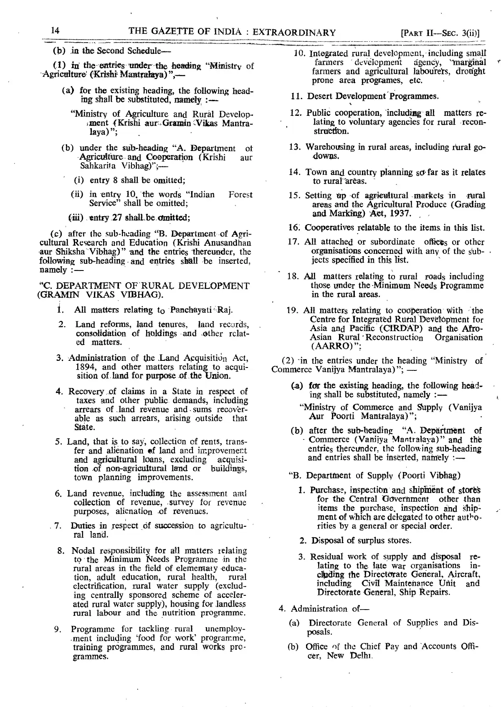
21222324252627Schedule 2 › Ministry of Agriculture
- Ministry of Agriculture and Rural Development (Krishi aur Gramin Vikas Mantralaya)
applied at schedule 2 › ministry Ministry of Agriculture and Rural Development (Krishi aur Gramin Vikas Mantralaya) in the Rules after #164
Schedule 2 › Ministry of Agriculture › Department of Agriculture and Cooperation › entry 8
applied at schedule 2 › ministry Ministry of Agriculture and Rural Development (Krishi aur Gramin Vikas Mantralaya) › department… in the Rules after #164
states inferred loose
Schedule 2 › Ministry of Agriculture › Department of Agriculture and Cooperation › entry 10
for “Indian Forest Service” read “”
applied at schedule 2 › ministry Ministry of Agriculture and Rural Development (Krishi aur Gramin Vikas Mantralaya) › department… in the Rules after #164
states inferred loose
Schedule 2 › Ministry of Agriculture › Department of Agriculture and Cooperation › entry 27
applied at schedule 2 › ministry Ministry of Agriculture and Rural Development (Krishi aur Gramin Vikas Mantralaya) › department… in the Rules after #164
states inferred loose
after Schedule 2 › Ministry of Agriculture › Department of Agricultural Research and Education
- C. DEPARTMENT OF RURAL DEVELOPMENT
- 1. All matters relating to Panchayati Raj.
- 2. Land reforms, land tenures, land records consolidation of holdings and other rclated matters.
- 3. Administration of the Land Acquisition Act 1894, and other matters relating to acquisition of land for purpose of the Union.
- 4. Recovery of claims in a State in respect of taxes and other public demands, including arrears of land revenue and sums recoverable as such arrears, arising outside that State.
- 5. Land, that is to say, collection of rents, transfer and alienation of land and improvement and agricultural loans, excluding acquisition of non-agricultural land or buildings town planning improvements.
and 14 more
- 6. Land revenue, including the assessment ami collection of revenue, survey for revenue purposes, alienation of revenues.
- 7. Duties in respect of succession to agricultural land.
- 8. Nodal responsibility for all matters relating to the Minimum Needs Programme in the rural areas in the field of elementary education, adult education, rural health, rural electrification, rural water supply (excluding centrally sponsored scheme of accelerated rural water supply), housing for…
- 9. Programme for tackling - rural unemployment including 'food for work' programme training programmes, and rural works programmes.
- 10. Integrated rural development, including small farmers development agency, 'marginal farmers and agricultural labourers, drought prone area programes, etc.
- 11. Desert Development Programmes.
- 12. Public cooperation, including all matters relating to voluntary agencies for rural reconstruction.
- 13. Warehousing in rural areas, including rural godowns.
- 14. Town and country planning so far as it relates to rural areas.
- 15. Setting up of agricultural markets in rural areas and the Agricultural Produce (Grading and Marking) Act, 1937.
- 16. Cooperatives relatable to the items in this list.
- 17. All attached or subordinate offices or other organisations concerned with any of the sub- + jects specified in this list. 1
- 18. All matters relating to rural roads including those under the Minimum Needs Programme in the rural areas.
- 19. All matters relating to cooperation with the Centre for Integrated Rural Development for Asia and Pacific (CIRDAP) and the Afro- Asian Rural Reconstruction Organisation (AARRO)
applied at schedule 2 › ministry Ministry of Agriculture and Rural Development (Krishi aur Gramin Vikas Mantralaya) › department C in the Rules after #164
states inferred so renamed
Schedule 2 › Ministry of Commerce
- Ministry of Commerce and Supply
applied at schedule 2 › ministry Ministry of Commerce and Supply in the Rules after #164
after Schedule 2 › Ministry of Commerce › Department of - Commerce
- B. Department of Supply
- 1. Purchase, inspection and shipment of store's for the Central Government other than items the purchase, inspection and shipment of which are delegated to other authorities by a general or special order.
- 2. Disposal of surplus stores.
- 3. Residual work of supply and disposal relating to the late war organisations including the Directorate General, Aircraft including Civil Maintenance Unit and Directorate General, Ship Repairs.
- 4. Administration of—
- a. Directorate General of Supplies and Disposals.
and 2 more
- b. Office of the Chief Pay and Accounts Officer, New Delhi.
- c. National Test House, Alipore, Calcutta.
applied at schedule 2 › ministry Ministry of Commerce and Supply › department B in the Rules after #164
read page break, states inferred loose
Page 15 of 24
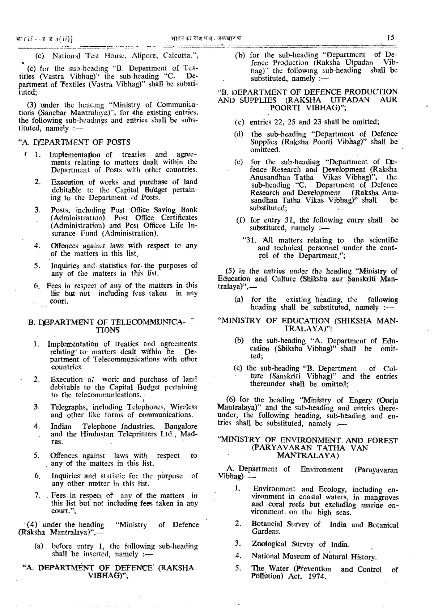
282930313233343536373839Schedule 2 › Ministry of Commerce › Department of Textitles
- C. Department of Textiles (Vastra Vibhag)
applied at schedule 2 › ministry Ministry of Commerce and Supply › department C in the Rules after #164
states inferred loose
Schedule 2 › Ministry of Communications
- A. DEPARTMENT OF POSTS
- 1. Implementation of treaties and agreements relating to matters dealt within the Department of Posts with other countries.
- 2. Execution of works and purchase of land debitable to the Capital Budget pertaining to the Department of Posts.
- 3. Posts, including Post Office Saving Bank (Administration), Post Office Certificates (Administration) and Post Officee Life Insurance Fund (Administration).
- 4. Offences against laws with respect to any of the matters in this list.
- 5. Inquiries and statistics for the purposes of any of the matters in this list.
and 9 more
- 6. Fees in respect of any of the matters in this list but not including fees taken in any court.
- B. DEPARTMENT OF TELECOMMUNICA- TIONS
- 1. Implementation of treaties and agreements relating to matters dealt within he Department of Telecommunications with other ! countries.
- 2. Execution of work and purchase of land debitable to the Capital Budget pertaining to the telecommunications. I
- 3. Telegraphs, including Telephones, Wireless and other like forms of communications.
- 4. Indian Telephone Industries, Bangalore and the Hindustan Teleprinters Ltd., Madras.
- 5. Offences against laws with respect to any of the matters in this list. 1
- 6. Inquiries and statistic for the purpose of any other matter in this list.
- 7. Fees in respect of any of the matters in this list but not including fees taken in any court.
applied at schedule 2 › department MINISTRY OF COMMUNICATIONS in the Rules after #164
read hindi missing
before Schedule 2 › Ministry of Defence › entry 1
- A. DEPARTMENT OF DEFENCE
applied at schedule 2 › ministry MINISTRY OF DEFENCE › department A in the Rules after #164
Schedule 2 › Ministry of Defence › Department of Defence Production
- B. DEPARTMENT OF DEFENCE PRODUCTION AND SUPPLIES
applied at schedule 2 › ministry MINISTRY OF DEFENCE › department B in the Rules after #164
Schedule 2 › Ministry of Defence › entry 22; Schedule 2 › Ministry of Defence › entry 25; Schedule 2 › Ministry of Defence › entry 23
applied at schedule 2 › ministry MINISTRY OF DEFENCE › department Department of Defence Supplies › entry 22 in the Rules after #164
Schedule 2 › Ministry of Defence › Department of Defence Supplies
applied at schedule 2 › ministry MINISTRY OF DEFENCE › department Department of Defence Supplies in the Rules after #164
Schedule 2 › Ministry of Defence › Department of Diefence Research and Development
- C. Department of Defence Research and Development
applied at schedule 2 › ministry MINISTRY OF DEFENCE › department C in the Rules after #164
states inferred loose
Schedule 2 › Ministry of Defence › entry 31
- 31. All matters relating to the scientific and technical personnel under the control of the Department.
applied at schedule 2 › ministry MINISTRY OF DEFENCE › department C › entry 31 in the Rules after #164
Schedule 2 › Ministry of Education and Culture
- MINISTRY OF EDUCATION (SHIKSHA MAN- TRALAYA)
applied at schedule 2 › ministry MINISTRY OF EDUCATION (SHIKSHA MAN- TRALAYA) in the Rules after #164
Schedule 2 › Ministry of Education and Culture › Department of Education
applied at schedule 2 › ministry MINISTRY OF EDUCATION (SHIKSHA MAN- TRALAYA) › department A in the Rules after #164
states inferred so renamed
Schedule 2 › Ministry of Education and Culture › Department of Culture
applied at schedule 2 › ministry MINISTRY OF EDUCATION (SHIKSHA MAN- TRALAYA) › department B in the Rules after #164
states inferred so renamed
Schedule 2 › Ministry of Engery
- MINISTRY OF ENVIRONMENT. AND FOREST
- A. Department of Environment (Parayavaran Vibhag) -
- 1. . Environment and Ecology, including environment in coastal waters, in mangroves and coral reefs but excluding marine environment on the high seas.
- 2. Botancial Survey of India and Botanical Gardens.
- 3. Zoological Survey of India.
- 4. National Museum of Natural History.
and 10 more
- 5. The Water (Prevention and Control of Pollution) Act, 1974.
- 6. The Water (Prevention and Control ot Pollution) Cess Act, 1977.
- 7. The Air (Prevention and Control of Pollution) Act, 1981.
- 8. Biosphere Reserve Programme.
- B. DEPARTMENT OF FORESTS AND WILD LIFE (VAN AUR VANYA JEEV VIBHAG) ---
- 1. National Forest Policy and Forestry development in the country including Social Forestry. Forest Policy and all matters relating to forests and forest administration in so far as the Andaman and Nicobar Islands are concerned.
- 3. Indian Forest Service.
- 4. Wild life reservation and protection of wild birds and animals.
- 5. Fundamental research including co-ordination thereof and higher education in Forestry.
- 6. Padmaja Naidu Himalayan Zoological Park.
applied at schedule 2 › ministry MINISTRY OF ENERGY (OORJA MAN- TRALAYA). in the Rules after #164
read page break, states inferred loose
Page 16 of 24
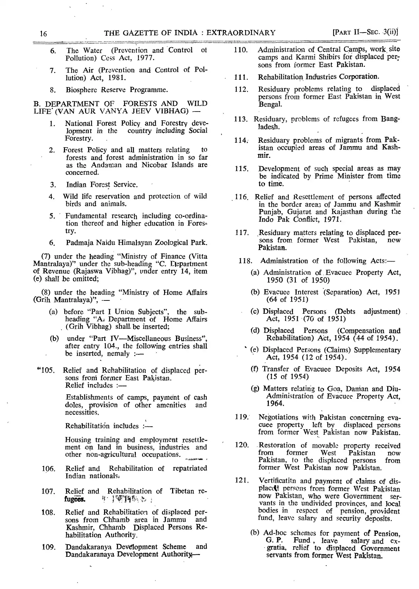
404142Schedule 2 › Ministry of Finance › Department of Revenue › entry 14 › item e
not applied (the change could not be placed in the Rules as read; see How this document was read)
before Schedule 2 › Ministry of Home Affairs › Part I Union Subjects
- heading "A. Department of Home Affairs (Grih Vibhag) shall be inserted
applied at schedule 2 › ministry MINISTRY OF HOME AFFAIRS › part I in the Rules after #164
after Schedule 2 › Ministry of Home Affairs › Part IV-Miscellaneous Business › entry 104
- 105. Relief and Rehabilitation of displaced persons from former East Pakistan. Relief includes: -- Establishments of camps, payment of cash doles, provision of other amenities and necessities. Rehabilitation includes :- Housing training and employment resettlement on land in business, industries and…
- 106. Relief and Rehabilitation of repatriated Indian nationals.
- 107. Relief and Rehabilitation of Tibetan refugees. 119145
- 108. Relief and Rehabilitation of displaced persons from Chhamb area in Jammu and Kashmir, Chhamb Displaced Persons Rehabilitation Authority.
- 109. Dandakaranya Development Scheme and Dandakaranaya Development Authority-
- 110. Administration of Central Camps, work site camps and Karmi Shibirs for displaced persons from former East Pakistan.
and 22 more
- 111. Rehabilitation Industries Corporation.
- 112. Residuary problems relating to displaced persons from former East Pakistan in West Bengal.
- 113. Residuary, problems of refugees from Bangladesh.
- 114. Residuary problems of migrants from Pakistan occupied areas of Jammu and Kashmir.
- 115. Development of such special areas as may be indicated by Prime Minister from time to time.
- 116. Relief and Resettlement of persons affected in the border areas of Jammu and Kashmir Punjab, Gujarat and Kajasthan during the Indo Pak Conflict, 1971.
- 117. Residuary matters relating to displaced persons from former West Pakistan, now Pakistan.
- 118. Administration of the following Acts:-
- a. Administration of Evacuee Property Act 1950 (31 of 1950)
- b. Evacuee Interest (Separation) Act, 1951 (64 of 1951)
- c. Displaced Persons (Debts adjustment) Act, 1951 (70 of 1951)
- d. Displaced Persons (Compensation and Rehabilitation) Act, 1954 (44 of 1954).
- e. Displaced Persons (Claims) Supplementary Act, 1954 (12 of 1954).
- f. Transfer of Evacuee Deposits Act, 1954 (15 of 1954)
- g. Matters relating to Goa, Daman and Diu- Administration of Evacuee Property Act
- 1964.
- 119. Negotiations with Pakistan concerning evacuee property left by displaced persons from former West Pakistan now Pakistan. 4
- 120. Restoration of movable property received from former West Pakistan now Pakistan, to the displaced persons from former West Pakistan now Pakistan.
- 121. Vertification and payment of claims of displace persons from former West Pakistan now Pakistan, who were Government servants in the undivided provinces, and local bodies in respect of pension, provident fund, leave salary and security deposits.
- b. Ad-hoc schemes for payment of Pension
- G. P. Fund, leave salary and exgratia, relief to displaced Government servants from former West Pakistan. [ भाग II - - खड 3 (ii) ] now Pakistan, grant of relief to the contractors in respect of their verified claims; grant of relief to pensioners migrated from former East Pakistan and West Pakistan,…
- 122. All attached or Subordinate Offices or other organisations concerned with any of the subjects specified in this Part. N.B. Except where specified the programmes of relief and rehabilitation are executed and administered through the State Governments.
not applied (the change could not be placed in the Rules as read; see How this document was read)
read page break
Page 17 of 24
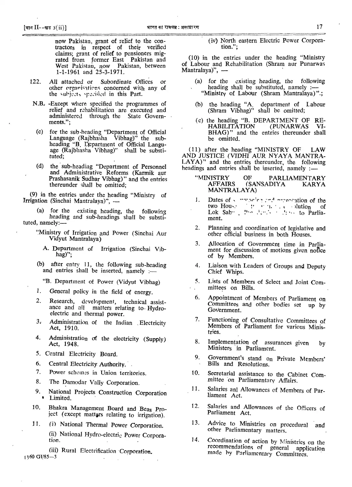
4344454647484950Schedule 2 › Ministry of Home Affairs › Department of Official Language
- B. Department of Official Language
applied at schedule 2 › ministry MINISTRY OF HOME AFFAIRS › department B in the Rules after #164
Schedule 2 › Ministry of Home Affairs › Department of Personnel and Administrative Reforms
applied at schedule 2 › ministry MINISTRY OF HOME AFFAIRS › department in the Rules after #164
Schedule 2 › Ministry of Irrigation
- Ministry of Irrigation and Power
- A. Department of Irrigation
applied at schedule 2 › ministry Ministry of Irrigation and Power in the Rules after #164
after Schedule 2 › Ministry of Irrigation › entry 11
- B. Department of Power
- 1. General policy in the field of energy.
- 2. Research, development, technical assistance and all matters relating to Hydroelectric and thermal power.
- 3. Administration of the Indian Electricity Act, 1910.
- 4. Administration of the electricity (Supply) Act, 1948.
- 5. Central Electricity Board.
and 10 more
- 6. Central Electricity Authority.
- 7. Power schemes in Union territories.
- 8. The Damodar Vally Corporation.
- 9. National Projects Construction Corporation ⚫ Limited.
- 10. Bhakra Management Board and Beas Project (except matters relating to irrigation).
- 11.
- i. National Thermal Power Corporation.
- ii. National Hydro-electric Power Corporation.
- iii. Rural Electrification Corporation. 1360 GT/85-3
- iv. North eastern Electric Power Corporation.
applied at schedule 2 › ministry Ministry of Irrigation and Power › department A › entry 11 in the Rules after #164
states inferred loose
Schedule 2 › Ministry of Labour and Rehabilitation
- Ministry of Labour
applied at schedule 2 › ministry Ministry of Labour in the Rules after #164
Schedule 2 › Ministry of Labour and Rehabilitation › department of Labour
applied at schedule 2 › ministry Ministry of Labour › department A in the Rules after #164
states inferred earlier name
Schedule 2 › Ministry of Labour and Rehabilitation › DEPARTMENT OF REHABILITATION
applied at schedule 2 › ministry Ministry of Labour › department B in the Rules after #164
states inferred earlier name
after Schedule 2 › MINISTRY OF LAW AND JUSTICE
- MINISTRY OF PARLIAMENTARY AFFAIRS
- 1. Dates of . "mariry cation of the two Hous lution of Lok Sab :to Parliament.
- 2. Planning and coordination of legislative and other official business in both Houses.
- 3. Allocation of Government time in Parliament for discussion of motions given notice of by Members.
- 4. Liaison with Leaders of Groups and Deputy Chief Whips.
- 5. Lists of Members of Select and Joint Committees on Bills.
and 32 more
- 6. Appointment of Members of Parliament on Committees and other bodies set up by Government.
- 7. Functioning of Consultative Committees of Members of Parliament for various Ministries.
- 8. Implementation of assurances given by Ministers in Parliament.
- 9. Government's stand on Private Members Bills and Resolutions.
- 10. Secretarial assistance to the Cabinet Committee on Parliamentary Affairs.
- 11. Salaries and Allowances of Members of Parliament Act.
- 12. Salaries and Allowances of the Officers of Parliament Act.
- 13. Advice to Ministries on procedural and other Parliamentary matters.
- 14. Coordination of action by Ministries on the recommendations of general application made by Parliamentary Committees.
- 15. Officially sponsored visits of Members of Parliament to places of interest.
- 16. Matters connected with powers, privileges and immunities of Members of Parliament.
- MINISTRY OF PETROLEUM
- 1. Exploration for, and exploitation of petroleum resources, including natural gas.
- 2. Production, supply, distribution, marketing and pricing of petroleum, incluling natural gas and petroleum products.
- 3. Oil Refineries, including Lube Plants.
- 4. Additives for petroleum and petroleum products.
- 5. Tube Blending and greases.
- 6. Petro-chemicals.
- 7. Industries relating to the production of noncellulosic synthetic fibres (Nylon, Polyester Acrylic, etc.)
- 8. Synthetic Rubber.
- 9. Plastics, including fabrication of plastic and plastic moulded goods.
- 10. Planning, development and control of, and assistance to, all industries dealt with by the Ministry.
- 11. All attached or subordinate offices or other organisations concerned with any of the subjects specified in this list.
- 12. Planning, development and regulation of Oilfield services.
- 13. Public sector projects falling under the subjects included in this list. Engineers India Limited and Indo-Burma Petroleum Company, together with its subsidiaries, except such projects as are specifically alloted to any other Ministry Department.
- 14. The Oilfields [(Regulation and Development) Act, 1948 (53 of 1948)].
- 15. The Oil and Natural Gas Commission Act 1959 (43 of 1959).
- 16. The Petroleum Pipelines [(Acquisition of Right of User in Land) Act, 1962 (50 of 1962)].
- 17. The Esso [(Acquisition of Undertakings in India) Act, 1974 (4 of 1974)].
- 18. The Oil Industry (Development) Act, 1974 (47 of 1974).
- 19. The Burmah-Shell (Acquisition of Undertakings in India) Act, 1976 (2 of 1976)].
- 20. The Caltex [(Acquisition of Shares of Caltex Oil Refining (India) Limited and of the Undertakings in India of Caltex (India) Limited] Act, 1977 (17 of 1977)
applied at schedule 2 › ministry MINISTRY OF PARLIAMENTARY AFFAIRS in the Rules after #164
read page break
Page 18 of 24
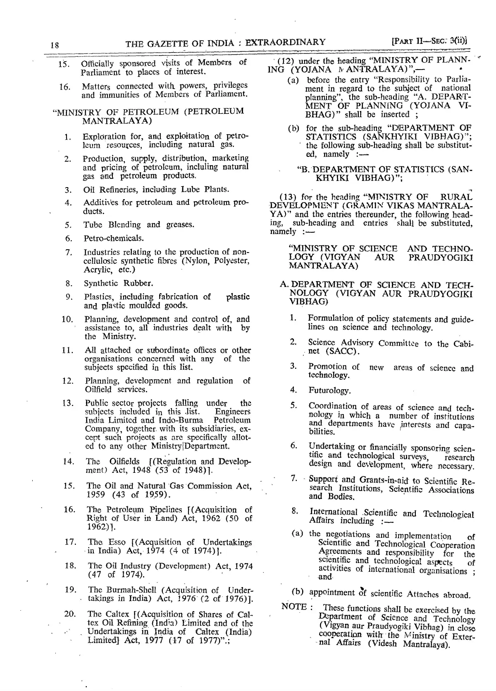
515253before Schedule 2 › MINISTRY OF PLANNING › entry 1
- A. DEPART- MENT OF PLANNING (YOJANA VI- BHAG)
applied at schedule 2 › ministry MINISTRY OF PLANNING › department DEPARTMENT OF STATISTICS › group_heading A in the Rules after #164
Schedule 2 › MINISTRY OF PLANNING › DEPARTMENT OF STATISTICS
- B. DEPARTMENT OF STATISTICS
applied at schedule 2 › ministry MINISTRY OF PLANNING › department B in the Rules after #164
Schedule 2 › MINISTRY OF RURAL DEVELOPMENT
- MINISTRY OF SCIENCE AND TECHNO- LOGY
- A. DEPARTMENT OF SCIENCE AND TECH- NOLOGY
- 1. Formulation of policy statements and guidelines on science and technology.
- 2. Science Advisory Committee to the Cabinet (SACC).
- 3. Promotion of new areas of science and technology.
- 4. Futurology.
and 34 more
- 5. Coordination of areas of science and technology in which a number of institutions and departments have interests and capabilities.
- 6. Undertaking or financially sponsoring scientific and technological surveys, research design and development, where necessary.
- 7. Support and Grants-in-aid to Scientific Research Institutions, Scientific Associations and Bodies.
- 8. International Scientific and Technological Affairs including :-
- a. the negotiations and implementation of Scientific and Technological Cooperation Agreements and responsibility for the scientific and technological aspects, of activities of international organisations and
- b. appointment of scientific Attaches abroad.
- NOTE: These functions shall be exercised by the Department of Science and Technology (Vigyan aur Praudyogiki Vibhag) in close cooperation with the Ministry of Exter- -nal Affairs (Videsh Mantralaya). 9: Scientific Surveys:
- i. Survey of India
- ii. National Aatlas & Thematic Mapping Organisation
- 10. India Meteorological Department
- 11.
- i. Institute of Astro-physics
- ii. Institute of Geo-magnetism
- iii. Institute of Tropical Meteorology.
- 12. National Council of Science and Technology Communication.
- 13. National . Science and Technology Entrepreneurship Development Board.
- 14. National Biotechnology Board.
- 15. Matters commonly affecting scientific and technological institutions e.g. financial, personnel, purchase and import policies and practices.
- 16. Management Information Systems for Science and Technology and coordination thereof.
- 17. Matters regarding Inter Agency Inter-Departmental coordination for evolving science and technology missions. .18. Matters concerning domestic technology particularly the promotion of ventures involving the commercialisation of such technology other than those under the Department of Scientific and…
- 19. All other measures needed for the promotion of science and technology and their application to the development of security of the nation.
- B. DEPARTMENT OF SCIENTIFIC AND IN- DUSTRIAL RESEARCH
- 1. All matters concerning the Council of Scientific and Industrial Research.
- 2. All matters relating to National Research Development Corporation.
- 3. All matters relating to Central Electronics Limited.
- 4. National Information System on Science and Technology (NISSAT).
- 5. Registration and Recognition of R&D.Units.
- 6. Matters relating to UNCTAD & WIPO.
- 7. National register for foreign collaborations.
- 8. Matters relating to creation of a pool for temporary placement of Indian Scientists and Technologists.
- 9. National register of Scientific Manpower.
- C. DEPARTMENT OF NON CONVENTIONAL ENERGY SOURCES
- Research and development of bio gas and programmes relating to bio gas units. Commission for Additional Sources of Energy (CASE).
- 3. Solar Photovoltaic devices, including their development, production and applications.
applied at schedule 2 › ministry MINISTRY OF RURAL DEVELOPMENT in the Rules after #164
read page break
Page 19 of 24
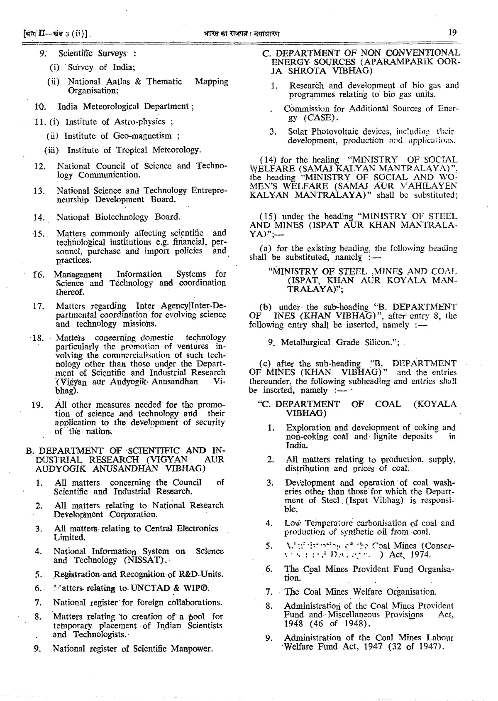
54555657Schedule 2 › MINISTRY OF SOCIAL WELFARE
- MINISTRY OF SOCIAL AND WO- MEN'S WELFARE
applied at schedule 2 › ministry MINISTRY OF SOCIAL AND WO- MEN'S WELFARE in the Rules after #164
Schedule 2 › MINISTRY OF STEEL AND MINES
- MINISTRY OF STEEL,MINES AND COAL (ISPAT, KHAN AUR KOYALA MAN- TRALAYA)
applied at schedule 2 › ministry MINISTRY OF STEEL,MINES AND COAL (ISPAT, KHAN AUR KOYALA MAN- TRALAYA) in the Rules after #164
after Schedule 2 › MINISTRY OF STEEL AND MINES › DEPARTMENT OF INES › entry 8
- 9. Metallurgical Grade Silicon.
applied at schedule 2 › ministry MINISTRY OF STEEL,MINES AND COAL (ISPAT, KHAN AUR KOYALA MAN- TRALAYA) › department B › entry 9 in the Rules after #164
states inferred earlier name, states inferred loose
after Schedule 2 › MINISTRY OF STEEL AND MINES › DEPARTMENT OF MINES
- C. DEPARTMENT OF COAL
- 1. Exploration and development of coking and non-coking coal and lignite deposits in India.
- 2. All matters relating to production, supply distribution and prices of coal.
- 3. Development and operation of coal washeries other than those for which the Department of Steel (Ispat Vibhag) is responsible.
- 4. Low Temperature carbonisation of coal and production of synthetic oil from coal.
- 5. Almithtmation of the Coal Mines (Conser- ANA . D) Act, 1974.
and 8 more
- 6. The Coal Mines Provident Fund Organisation.
- 7. ' The Coal Mines Welfare Organisation.
- 8. Administration of the Coal Mines Provident Fund and Miscellaneous Provisions Act 1948 (46 of 1948).
- 9. Administration of the Coal Mines Labour Welfare Fund Act, 1947 (32 of 1947).
- 9A. Rules under the Mines Act, 1952 (32 of 1952) for the levy and collection of duty of excise on coke and coal produced and despatched from mines and administration of rescue fund.
- 10. Administration of the Coal Bearing Areas (Acquisition and Development) Act, 1957.
- 11. Public Sector Enterprises dealing with coal and lignite.
- 12. Administration of the Mines and Minerals (Regulation and Development) Act, 1957 and other Union Laws in so far as the said Act and Laws relate to coal and lignite and sand for stowing, business incidental to such administration including questions concerning various States.
applied at schedule 2 › ministry MINISTRY OF STEEL,MINES AND COAL (ISPAT, KHAN AUR KOYALA MAN- TRALAYA) › department C in the Rules after #164
read page break, states inferred earlier name
Page 20 of 24
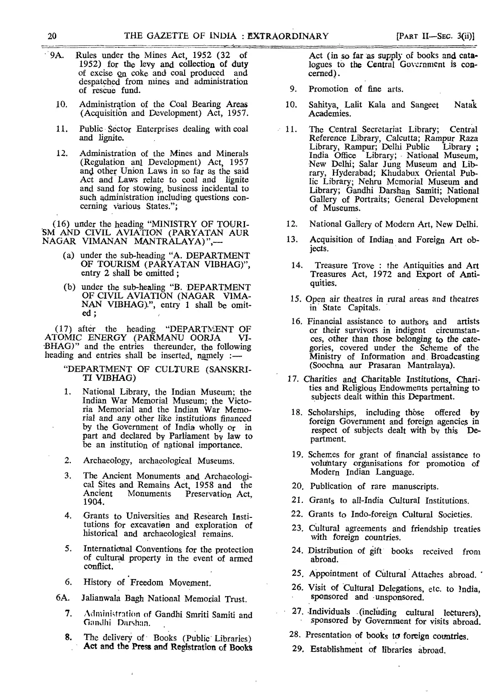
585960Schedule 2 › MINISTRY OF TOURISM AND CIVIL AVIATION › DEPARTMENT OF TOURISM › entry 2
applied at schedule 2 › ministry MINISTRY OF TOURISM AND CIVIL AVIATION › department A › entry 2 in the Rules after #164
Schedule 2 › MINISTRY OF TOURISM AND CIVIL AVIATION › DEPARTMENT OF CIVIL AVIATION › entry 1
applied at schedule 2 › ministry MINISTRY OF TOURISM AND CIVIL AVIATION › department B › entry 1 in the Rules after #164
after Schedule 2 › DEPARTMENT OF ATOMIC ENERGY
- DEPARTMENT OF CULTURE
- 1. National Library, the Indian Museum; the Indian War Memorial Museum; the Victoria Memorial and the Indian War Memorial and any other like institutions financed by the Government of India wholly or in part and declared by Parliament by law to be an institution of national importance.
- 2. Archaeology, archaeological Museums.
- 3. The Ancient Monuments and Archaeological Sites and Remains Act, 1958 and the Ancient Monuments Preservation Act
- 1904.
- 4. Grants to Universities and Research Institutions for excavation and exploration of historical and archaeological remains.
and 40 more
- 5. International Conventions for the protection of cultural property in the event of armed conflict.
- 6. History of Freedom Movement.
- 6A. Jalianwala Bagh National Memorial Trust.
- 7. Administration of Gandhi Smriti Samiti and Gandhi Darshan.
- 8. The delivery of Books (Public Libraries) Act and the Press and Registration of Books f Act (in so far as supply of books and catalogues to the Central Government is concerned).
- 9. Promotion of fine arts.
- 10. Sahitya, Lalit Kala and Sangeet Natak Academies.
- 11. The Central Secretariat Library; Central Reference Library, Calcutta; Rampur Raza Library, Rampur; Delhi Public Library India Office Library; National Museum New Delhi; Salar Jung Museum and Library, Hyderabad; Khudabux Oriental Public Library; Nehru Memorial Museum and Library; Gandhi Darshan…
- 12. National Gallery of Modern Art, New Delhi.
- 13. Acquisition of Indian and Foreign Art objects.
- 14. Treasure Trove the Antiquities and Art Treasures Act, 1972 and Export of Antiquities.
- 15. Open air theatres in rural areas and theatres in State Capitals.
- 16. Financial assistance to authors and artists or their survivors in indigent circumstances, other than those belonging to the categories, covered under the Scheme of the Ministry of Information and Broadcasting (Soochna aur Prasaran Mantralaya).
- 17. Charities and Charitable Institutions, Charities and Religious Endowments pertaining to subjects dealt within this Department.
- 18. Scholarships, including those offered by foreign Government and foreign agencies in respect of subjects dealt with by this Department.
- 19. Schemes for grant of financial assistance to voluntary organisations for promotion of Modern Indian Language.
- 20. Publication of rare manuscripts.
- 21. Grants to all-India Cultural Institutions.
- 22. Grants to Indo-foreign Cultural Societies.
- 23. Cultural agreements and friendship treaties with foreign countries.
- 24. Distribution of gift books received from abroad.
- 25. Appointment of Cultural Attaches abroad.
- 26. Visit of Cultural Delegations, etc. to India sponsored and unsponsored.
- 27. Individuals (including cultural lecturers) sponsored by Government for visits abroad.
- 28. Presentation of books to foreign countries.
- 29. Establishment of libraries abroad.
- 30. Translation of Indian classics into foreign languages.
- 31. Exchange of official publications with foreign Governments and institutions and agreements for such exchanges.
- 32. Presentation of Indian art objects abroad.
- 33. Admission of Foreign students in Cultural Institutions.
- 34. Exchange of artists, dancers, musicians, etc. under the Cultural Exchange Programmes.
- 35. Revision of Gazetteers.
- 36. Observance of Centenaries and Anniversaries of important personalities.
- 37. Publication, information and statistics relating to subjects dealt with by this Department.
- 38. International Congress of Orientalists.
- 39. Anthropological Survey of India.
- 40. National Archives of India.
- 40A. Rashtriya Manava Sangrahalaya.
- 41. National Council of Science Museums, Calcutta.
- 42. All other attached or subordinate offices or other organisations concerned with any of the subjects specified in this list.
applied at schedule 2 › ministry DEPARTMENT OF CULTURE in the Rules after #164
read page break
Page 21 of 24
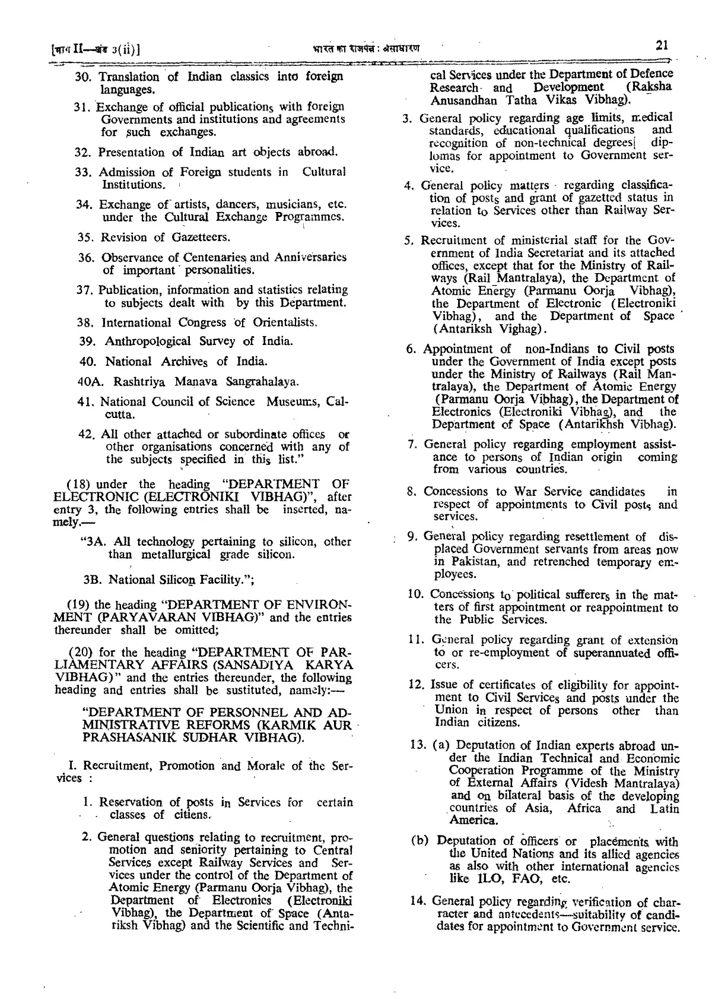
616263after Schedule 2 › DEPARTMENT OF ELECTRONIC › entry 3
- 3A. All technology pertaining to silicon, other than metallurgical grade silicon.
- 3B. National Silicon Facility.
not applied (the change could not be placed in the Rules as read; see How this document was read)
Schedule 2 › DEPARTMENT OF ENVIRONMENT
applied at schedule 2 › department in the Rules after #164
states inferred loose
Schedule 2 › DEPARTMENT OF PARLIAMENTARY AFFAIRS
- DEPARTMENT OF PERSONNEL AND AD MINISTRATIVE REFORMS
- I. Recruitment, Promotion and Morale of the Services:
- 1. Reservation of posts in Services for certain . classes of citiens.
- 2. General questions relating to recruitment, promotion and seniority pertaining to Central Services except Railway Services and Services under the control of the Department of Atomic Energy (Parmanu Oorja Vibhag), the Department of Electronics (Electroniki Vibhag), the Department of Space (Antariksh…
- 3. General policy regarding age limits, medical standards, educational qualifications and recognition of non-technical degrees diplomas for appointment to Government service.
- 4. General policy matters " regarding classification of posts and grant of gazetted status in relation to Services other than Railway Services.
and 98 more
- 5. Recruitment of ministerial staff for the Government of India Secretariat and its attached offices, except that for the Ministry of Railways (Rail Mantralaya), the Department of Atomic Energy (Parmanu Oorja Vibhag) the Department of Electronic (Electroniki Vibhag), and the Department of Space…
- 6. Appointment of non-Indians to Civil posts under the Government of India except posts under the Ministry of Railways (Rail Mantralaya), the Department of Atomic Energy (Parmanu Oorja Vibhag), the Department of Electronics (Electroniki Vibhag), and the Department of Space (Antarikhsh Vibhag).
- 7. General policy regarding employment assistance to persons of Indian origin coming from various countries.
- 8. Concessions to War Service candidates in respect of appointments to Civil posts and services. : 9. General policy regarding resettlement of displaced Government servants from areas now in Pakistan, and retrenched temporary employees.
- 10. Concessions to political sufferers in the matters of first appointment or reappointment to the Public Services.
- 11. General policy regarding grant of extension to or re-employment of superannuated officers.
- 12. Issue of certificates of eligibility for appointment to Civil Services and posts under the Union in respect of persons other than Indian citizens.
- 13.
- a. Deputation of Indian experts abroad under the Indian Technical and Economic Cooperation Programme of the Ministry of External Affairs (Videsh Mantralaya) and on bilateral basis of the developing countries of Asia, Africa Africa and Latin America.
- b. Deputation of officers or placements with the United Nations and its allied agencies as also with other international agencies like ILO, FAO, etc.
- 14. General policy regarding, verification of charracter and antecedents-suitability of candidates for appointment to Government service.
- 15. Policy matters relating to issue of No Objection certificate to serving personnel for registration with the Employment. Exchange for higher posts.
- 16. Matters relating to Personal Staff of Ministers.
- 17. Re-deployment of staff rendered surplus in Central Government offices as a result of:—
- i. administrative reforms.
- ii. studies made by the S.I.U.
- iii. winding up of long term but temporary organisations.
- 18. Advising Ministeries on proper management of various cadres under their control.
- II. Training
- 19.
- a. Formation and coordination of training policies for the All India and Central Services.
- b. Lal Bahadur Shastri National Academy of Administration and Institute of Secretariat Traming and Management.
- c. Traning programmes for the Indian Administrative Service and the Central Secretariat Service.
- d. Preparation and publication of training material and of information of training techniques, facilities and programmes
- e. Liaison with training institutinos within the States and abroad.
- f. Refresher and special courses for Middle and Senior Management levels.
- III. Vigilance and Discipline 20% (a) The Prevention of Corruption Act, 1947 the Central Bureau of Investigation (the Delhi Special Police Establishment. including the Legal Division, the Technical Division, the Policy Division and the Administration Division); the Food Offences Wing; and Economic…
- b. Accord of sanction for the prosecution of any person for any offence investigated into by the Delhi Special Police Establishment where such sanction is required to be accorded by, the Central Government.
- NOTE: Sanction for the prosecution of any person for any offence not investigated into by the Delhi Special Police Establishment shall e accoded by the Administrative Department where such sanction is required to be accorded by the Central Government.
- c. Central Vigilance Commission.
- d. All policy matters pertaining to vigilance and discipline among pulic servants.
- e. Relationship between members of Parlià- ment and the Administration. IV, Service Conditions.
- 21. General questions (other than those which have a financial bearing) including Conduct • Rules relating to All dia and Urion Public Service except in regard to services under the control of the Ministry of Railways (Rail Mantralaya), the Department of Atomic Energy (Parmanu Oorja Vibhag) the…
- 22. Conditions of service of Central Government employees (excluding those under the control of the Ministry of Railways (Rail Mantralaya), the Department of Atomic Energy (Parmanu Oorja Vibhag), the Department of Electronics (Electroniki Vibhag), the Department of Space (Antariksh Vibhag) and the…
- 23.
- a. The administration of all Service Rules including F. Rs., S. Rs. and C.S.Rs. except-
- i. proposals relating to revisions of pay structure of employees
- ii. proposals for revisions of pay scales of Central Government employees
- iii. appointment of Pay Commission, processing of the recommendations and implementation thereof
- iv. dearness allowance and other compensatory allowances and travelling allowances
- v. pension structure and relief to pensioners
- vi. any new facility to Government employees by way of service conditions or fringe benefits which involve significant recurring financial implications and
- vii. matters relating to amendments to service rules having a predominantly financial character.
- b. Initiation of proposals for new facility to Government employees by way of service conditions and fringe benefits involving significant recurring financial implications.
- c. Issue of formal orders of the Government of India in matters. relating to amendments to service rules including those having a predominantly financial character referred to in item (vii) of clause (a).
- d. Relaxation and liberalisation of any service rules having a long-term financial implications in consultation with the Ministry of Finance. :23 II-3(il)]
- 24. Grants to the Indian Institute of Public Administration.
- 25. Leave travel concession for civil employees other than Railway employees.
- 26. The Central Services (Temporary Service) Rules, 1949.
- 27. General policy regarding retrenchment and reversion of temporary Government servants except those under the Ministry of Railways (Rail Mantralaya).
- 28. Administration of the Central Services (Safeguarding of National Security) Rules.
- 29. Uniforms for Class IV and other Government servants in the Central Secretariat and its attached offices.
- 30. Working Hours and Holidays for Government of India offices.
- 31. Administration of service rules with financial content under specific delegation made by the Ministry of Finance (Vitta Mantralaya).
- 32. Advice on proposals in respect of the Ministry of Finance (Vitta Mantralaya) relating to the number or 1 grade of posts to the strength of a service or to the pay and allowances of Government servants or any other condtions of their service having financial implications.
- 33. General policy regarding reimbursement of legal expenses incurred by Government servants.
- 34. Proposals for grant of ex-officio Secretarial status.
- 35. Honorary appointments of persons in civil posts.
- 36. Oath of allegiance to the Constitution.
- V. Senior and Middle Management
- 37. All aspects of Senior Management (i.e. Joint Secretaries and above and their equivalents) including developments of personnel for it.
- 38.
- a. Estalishment Officer to the Government of India.
- b. Appointments Committee of the Cabinet.
- c. Central Establishment Board.
- d. Career Development for Middle Management (i.e. Directors, Deputy and Under Secretaries and equivalents).
- VI. Government Employees Relations, including Staff Grievances and Welfare.
- 39.
- a. Service Associating of the industrial, and non-industrial employees of the Government of India.
- b. Joint Consultative Machinery; Departmental Council for the Department of Personnel and Administrative Reforms (Karmik aur Prashasanik Sudhar Vibhag). . (c) Machinery for the redress of staff grievances.
- d. Staff welfare including sports, cultural activities (Grih Kalyan Kendras, Canteens, Co-operative, Stores, etc.).
- e. Other matters involving Government Employees relations not specifically provided for under any other entry relating to the Department.
- VII. Union Public Service Commission
- 40. Union Public Service Commission.
- VIII. Centralised aspects of Managing IAS, Inter- Ministry cadres, including a Career Planning for the members thereof.
- 41.
- a. Creation of new All India Services.
- b. Rules and Regulations under the All India Services Act, 1951.
- c. All matters relating to the Indian Administrative Service, including the Indian Civil Service.
- d. All India Civil List and History of Ser- { vices.
- e. Central Secretariat Service, Central Sectariat Stenographers' Service and Central Secretariat Clerical Service.
- IX. Career Planning and Manpower Planning
- 42.
- a. General policy questions regarding Career Planning and Manpower Planning for the All India and Central Government Services.
- b. All matters pertaining to Career Planning and Manpower Planning for the Indian Administrative Service and the Central Secretariat Service.
- X. Personnel Management Agencies.
- 43. Coordination of the work of personnel management agencies within varicus Ministeries.
- XI. Research in Personnel Administration, etc.
- 44. Research in Personnel Administration; liaison with State Governments, prefe-sional institutions etc. in personnel matters. THE GAZETTE FO INDIA: EXTRAORDINARY
- XII. Allocation of personnel and integration of Services as a result of States Re-organisation
- 45.
- a. Allocation of service personnel affected by re-organisation of States.
- b. Division and integration of services affected by the re-organisation of States other than in Union Territories.
- c. Protection of service conditions of personnel affected by re-organisation of States.
- d. Other matters relating to State Services affected by the re-organisation of States.
- XIII. Administrative Reforms
- 46. Administrative Reforms.
- 47. Organisation and methods.
applied at schedule 2 › department DEPARTMENT OF PARLIAMENTARY AFFAIRS in the Rules after #164
read page break
Page 22 of 24
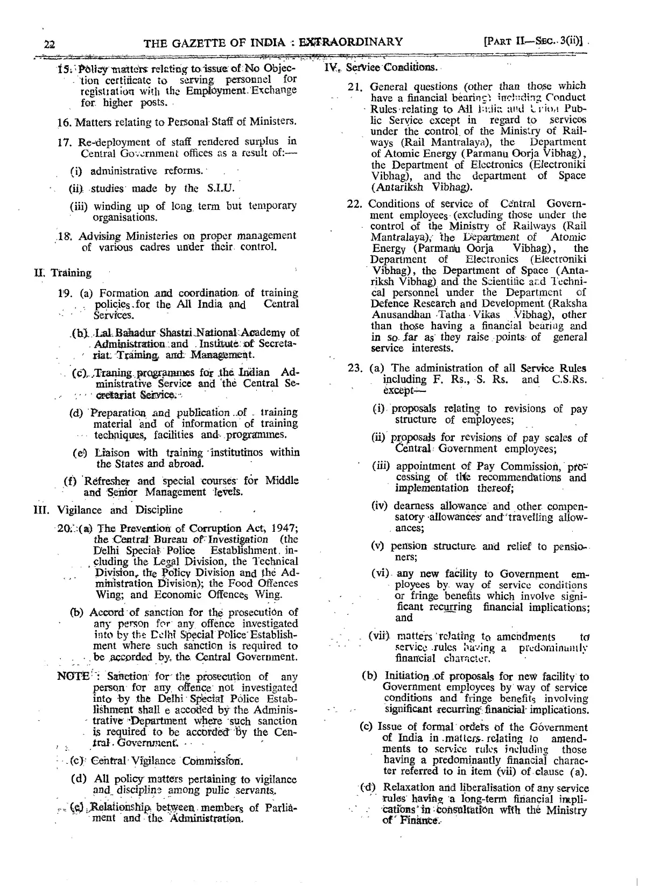
Page 23 of 24
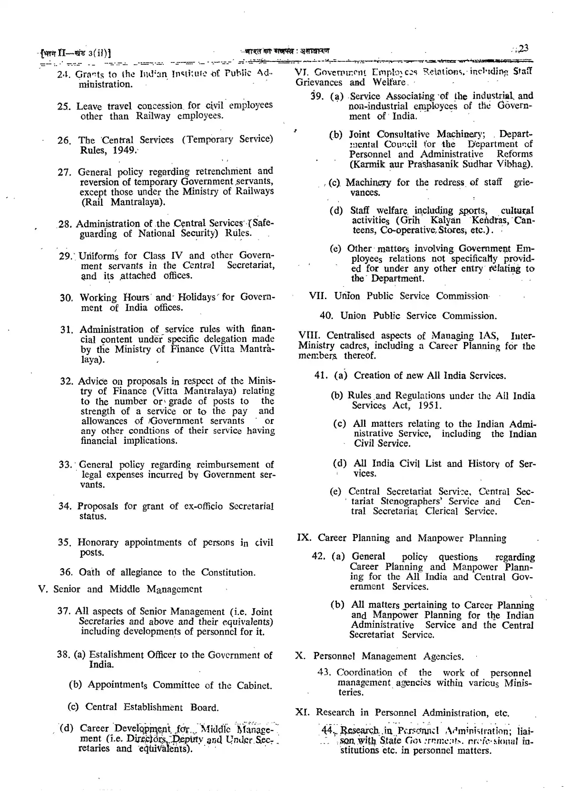
Page 24 of 24
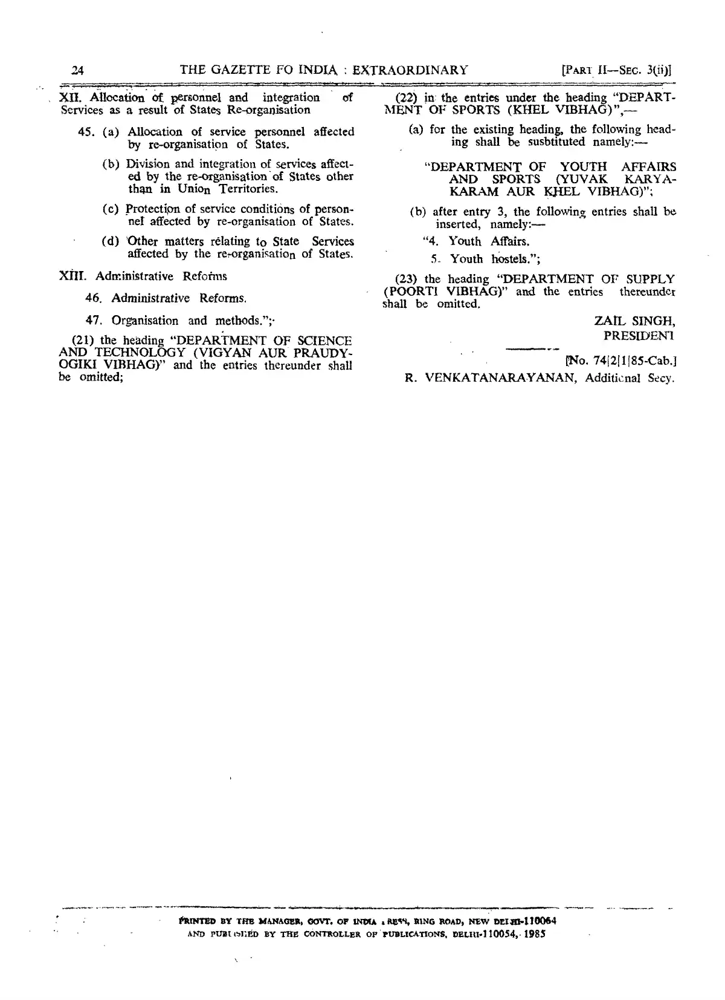
64656667Schedule 2 › DEPARTMENT OF SCIENCE AND TECHNOLOGY
applied at schedule 2 › department in the Rules after #164
Schedule 2 › DEPARTMENT OF SPORTS
- DEPARTMENT OF YOUTH AFFAIRS AND SPORTS
applied at schedule 2 › ministry DEPARTMENT OF YOUTH AFFAIRS AND SPORTS in the Rules after #164
after Schedule 2 › DEPARTMENT OF SPORTS › entry 3
- 4. Youth Affairs.
- 5. Youth hostels.
applied at schedule 2 › ministry DEPARTMENT OF YOUTH AFFAIRS AND SPORTS › entry 4 in the Rules after #164
states inferred so renamed
Schedule 2 › DEPARTMENT OF SUPPLY
applied at schedule 2 › ministry in the Rules after #164
How this document was read
Edits to the reading
| Date | By | Edit | Before → after |
|---|---|---|---|
| 12 November 2026 | claude | word corrected | |
| 13 November 2026 | claude | word added | |
| 21 November 2026 | claude | word corrected |
Changes placed by an inference rule
| Change | Rule | Status | What |
|---|---|---|---|
| 22 | loose | accepted | change 22: ministry Ministry of Agriculture taken for ministry Ministry of Agriculture and Rural Development (Krishi aur Gramin Vikas Mantralaya), named loosely |
| 23 | loose | accepted | change 23: ministry Ministry of Agriculture taken for ministry Ministry of Agriculture and Rural Development (Krishi aur Gramin Vikas Mantralaya), named loosely |
| 24 | loose | accepted | change 24: ministry Ministry of Agriculture taken for ministry Ministry of Agriculture and Rural Development (Krishi aur Gramin Vikas Mantralaya), named loosely |
| 25 | loose | accepted | change 25: ministry Ministry of Agriculture taken for ministry Ministry of Agriculture and Rural Development (Krishi aur Gramin Vikas Mantralaya), named loosely |
| 27 | loose | accepted | change 27: ministry Ministry of Commerce taken for ministry Ministry of Commerce and Supply, named loosely |
| 27 | loose | accepted | change 27: department Department of - Commerce taken for department DEPARTMENT OF COMMERCF, named loosely |
| 28 | loose | accepted | change 28: ministry Ministry of Commerce taken for ministry Ministry of Commerce and Supply, named loosely |
| 28 | loose | accepted | change 28: department Department of Textitles taken for department Department of Textiles, named loosely |
| 34 | loose | accepted | change 34: department Department of Diefence Research and Development taken for department DEPARTMENT OF DEFENCE RESEARCH AND DEVELOPMENT, named loosely |
| 37 | so_renamed | unreviewed | change 37: ministry Ministry of Education and Culture taken as MINISTRY OF EDUCATION (SHIKSHA MAN- TRALAYA), the name change 36 of this notification gave it |
| 38 | so_renamed | unreviewed | change 38: ministry Ministry of Education and Culture taken as MINISTRY OF EDUCATION (SHIKSHA MAN- TRALAYA), the name change 36 of this notification gave it |
| 39 | loose | accepted | change 39: ministry Ministry of Engery taken for ministry MINISTRY OF ENERGY (OORJA MAN- TRALAYA)., named loosely |
| 46 | loose | accepted | change 46: ministry Ministry of Irrigation taken for ministry Ministry of Irrigation and Power, named loosely |
| 48 | earlier_name | accepted | change 48: ministry Ministry of Labour and Rehabilitation taken for ministry Ministry of Labour, its name before the First Schedule renamed it |
| 49 | earlier_name | accepted | change 49: ministry Ministry of Labour and Rehabilitation taken for ministry Ministry of Labour, its name before the First Schedule renamed it |
| 56 | earlier_name | accepted | change 56: ministry MINISTRY OF STEEL AND MINES taken for ministry MINISTRY OF STEEL,MINES AND COAL (ISPAT, KHAN AUR KOYALA MAN- TRALAYA), its name before the First Schedule renamed it |
| 56 | loose | accepted | change 56: department DEPARTMENT OF INES taken for department DEPARTMENT OF MINES, named loosely |
| 57 | earlier_name | accepted | change 57: ministry MINISTRY OF STEEL AND MINES taken for ministry MINISTRY OF STEEL,MINES AND COAL (ISPAT, KHAN AUR KOYALA MAN- TRALAYA), its name before the First Schedule renamed it |
| 62 | loose | accepted | change 62: ministry DEPARTMENT OF ENVIRONMENT taken for department *DFPARTMENT OF ENVIRONMENT, named loosely |
| 66 | so_renamed | unreviewed | change 66: ministry DEPARTMENT OF SPORTS taken as DEPARTMENT OF YOUTH AFFAIRS AND SPORTS, the name change 65 of this notification gave it |
Known issues
| Change | Issue | Known as |
|---|---|---|
| 40 | change 40: no department Department of Revenue under schedule 2 › ministry MINISTRY OF FINANCE | Finance's Department of Revenue |
| 42 | change 42: no group_heading Part IV-Miscellaneous Business under schedule 2 › ministry MINISTRY OF HOME AFFAIRS | Home Affairs' structure |
| 61 | change 61: no entry 3 under schedule 2 › department DEPARTMENT OF ELECTRONICS | Departments of the top level not in the Second Schedule |
From the Government of India (Allocation of Business) Rules, 1961 and their amendments, as published by the Cabinet Secretariat (cabsec.gov.in), read by orgpedia. The readings of the older scanned gazettes have known gaps.